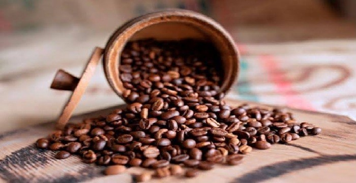

Café de altura, cultivado en el Macizo Colombiano
Granos seleccionados a mano por familias caficultoras del Cauca. Tostión artesanal, sabor con notas de panela y frutos rojos.
Nuestra paleta de colores
Partimos de un color base (café tostado) y en HSL variamos solo la luminosidad para obtener tonos; luego sumamos un secundario y un acento.
- Primario 900#372010
- Primario 700#633D21
- Primario 500#9B633B
- Primario 300#CEA37E
- Primario 100#F2E6D9
- Secundario#326744
- Acento#F4AF25